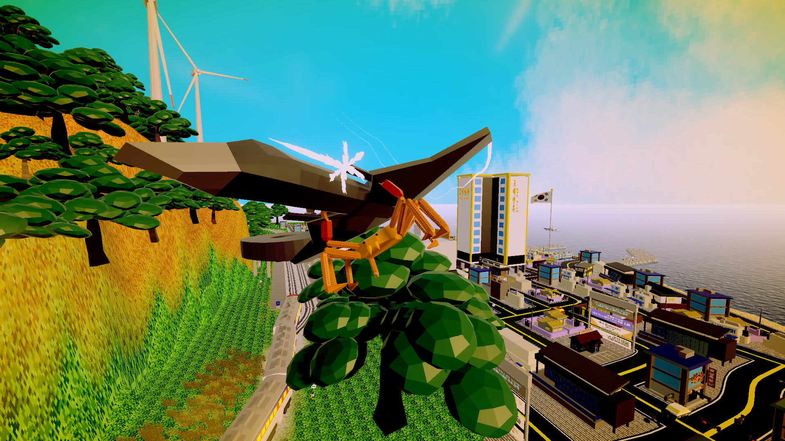
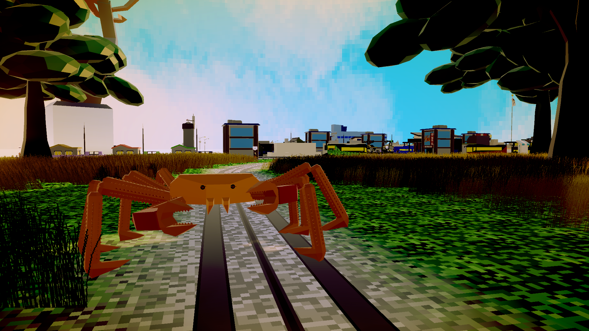
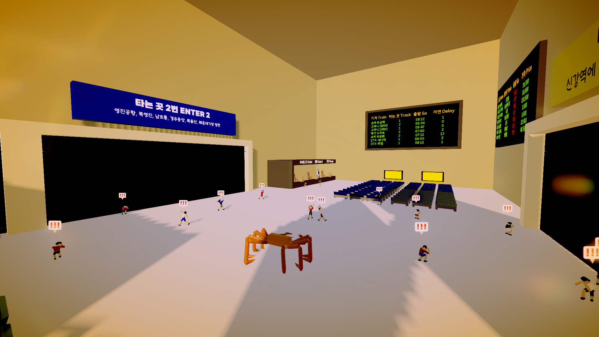
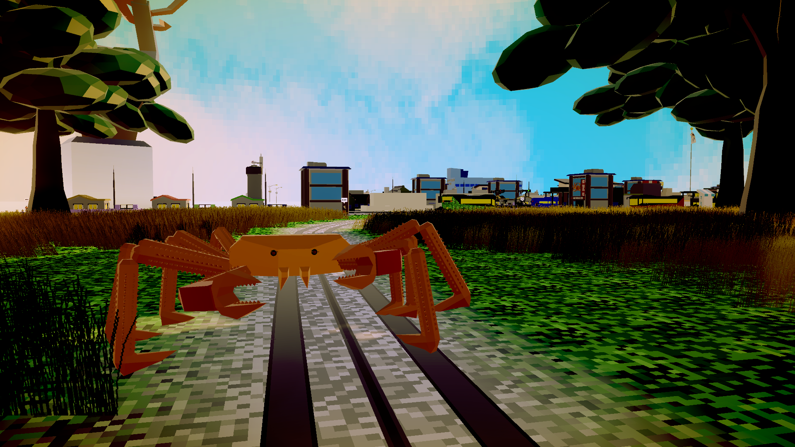
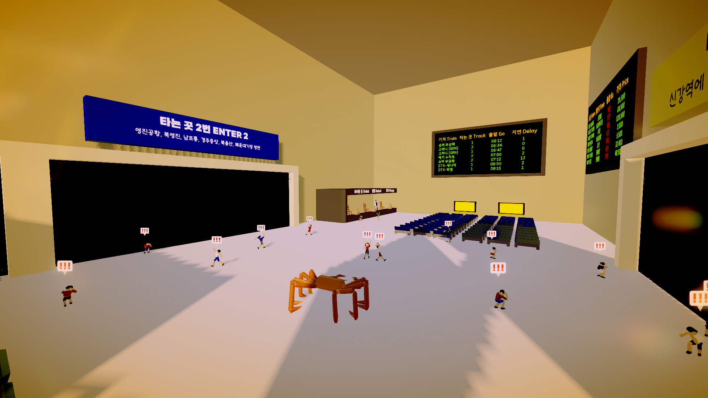

Wishlist Now!
한국어
슈퍼 대게 시뮬레이터는 대게가 되어, 납치된 수많은 대게들을 해방시키면서
주요 도시를 파괴하는 3인칭 파괴 액션 어드벤처 게임입니다.
English
Super Kingcrab Simulator became a king crab, liberating many kidnapped king crabs
A third-person destructive action adventure game that destroys major cities.
Screenshots
 



플랫폼 Platform
Steam (Windows, PC)
개발일지 SNS & Devlog SNS
트레일러 영상 & Trailer Video
SkagoGames 2025. made in Skago.